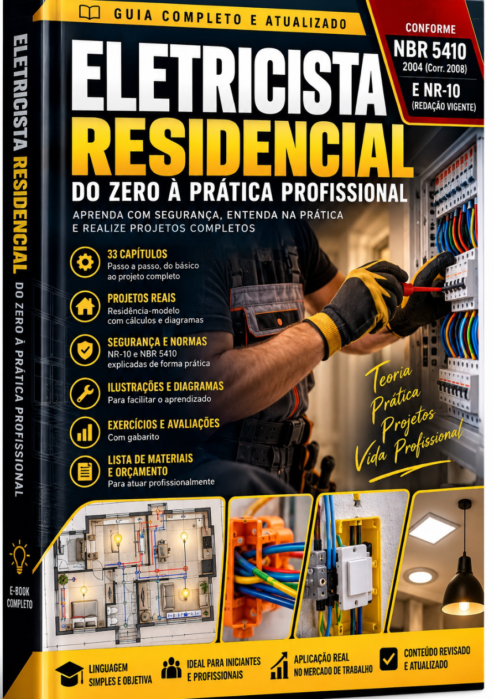
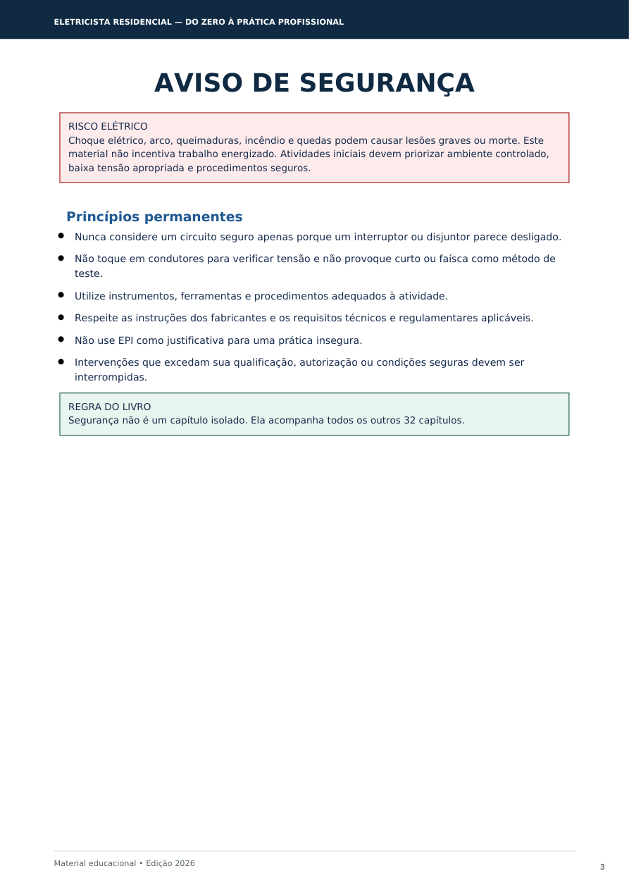
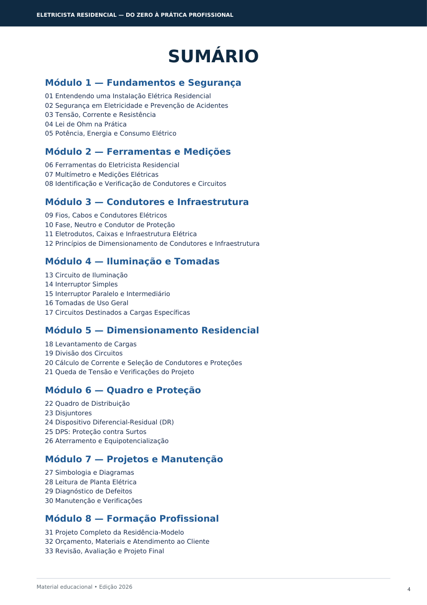
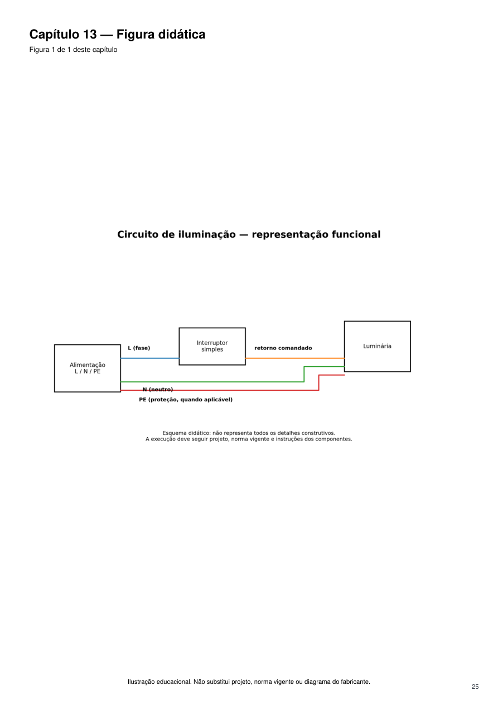
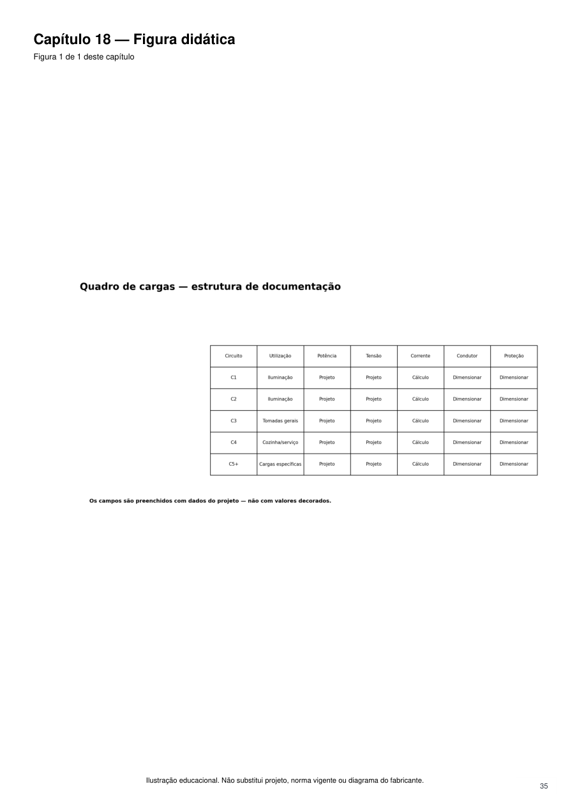

Fundamentos e segurança
Instalações, prevenção de acidentes, grandezas elétricas, Lei de Ohm, potência e consumo.
33 capítulos organizados em 8 módulos, com segurança, medições, circuitos, dimensionamento, proteção, projetos e uma residência-modelo progressiva.
QUERO COMEÇAR MEUS ESTUDOS →
Instalações, prevenção de acidentes, grandezas elétricas, Lei de Ohm, potência e consumo.
Ferramentas, multímetro e identificação responsável de circuitos.
Cabos, fase, neutro, PE, eletrodutos e dimensionamento.
Iluminação, comandos, tomadas e cargas específicas.
Cargas, circuitos, corrente, proteção e queda de tensão.
Disjuntores, DR, DPS, aterramento e equipotencialização.
Diagramas, leitura de planta, diagnóstico e verificações.
Projeto completo, orçamento, atendimento e avaliação final.
Algumas páginas reais da edição comercial.


<"
Diagrama didático de iluminação">
Sala, cozinha, dois quartos, banheiro e área de serviço recebem progressivamente iluminação, tomadas, cargas, circuitos, proteções, infraestrutura e documentação.
Do Zero à Prática Profissional • Edição 2026
R$ 47,00Checkout será conectado na próxima etapa.
Este e-book é material educacional. Não substitui formação exigida por lei, habilitação profissional, responsabilidade técnica, projeto específico, instruções de fabricantes ou consulta às normas vigentes. Serviços elétricos envolvem riscos e exigem procedimentos e condições seguras.
O checkout será conectado após a revisão final desta página.